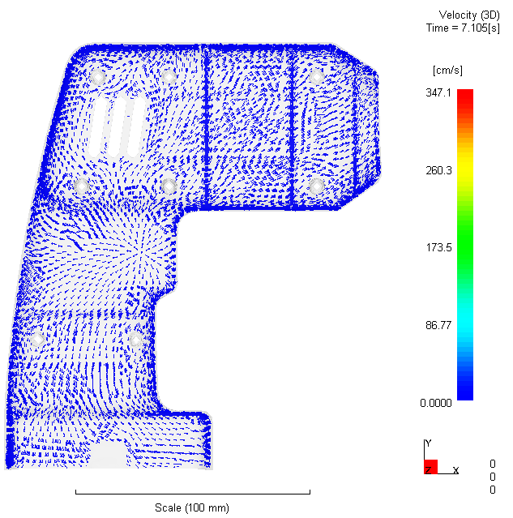
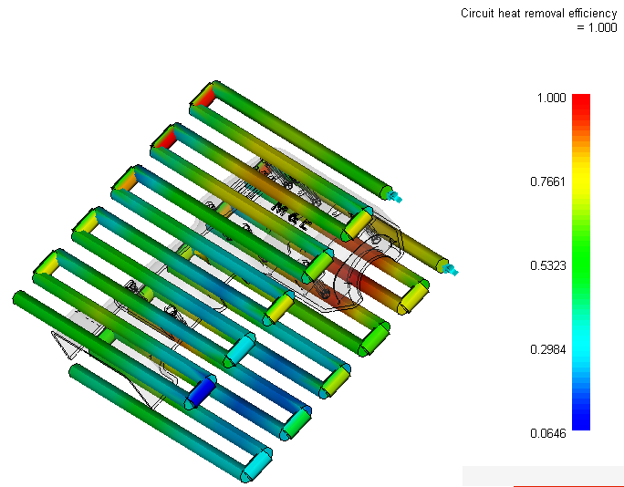
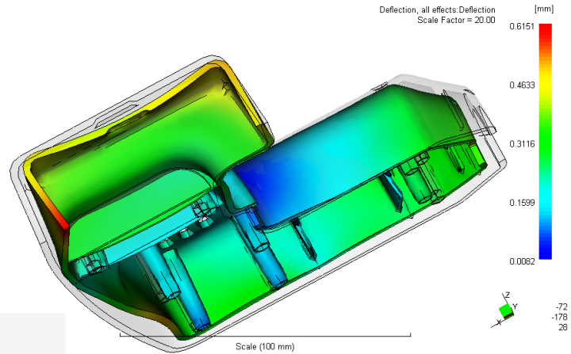
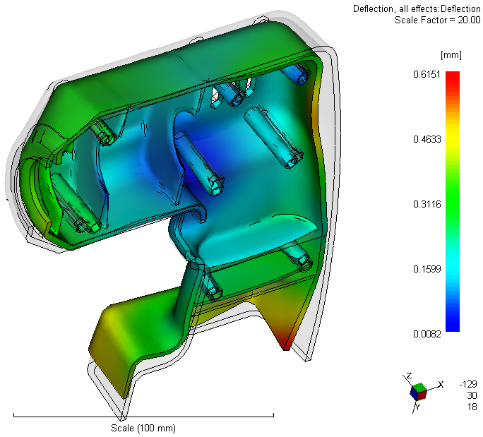
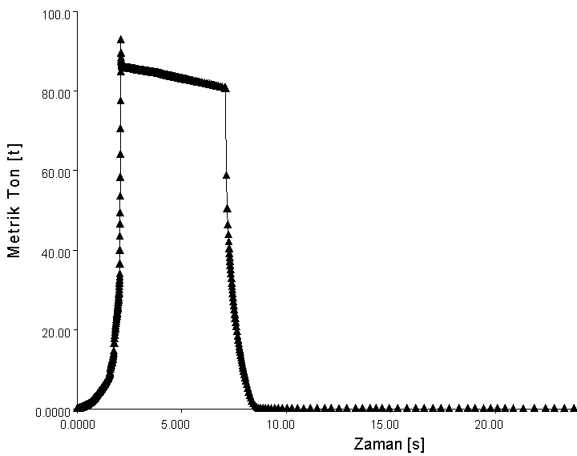

6 Akýþ, Soðuma, Çarpýlma Analizleri
Yapýlan simülasyonlarýn sonucu, belirli an ve noktalardaki deðerler yerine genel davranýþýn gözlenmesine olanak saðlayan sabit ve hareketli grafikler üzerinden görselleþtirilmektedir. Tanýmlanan malzemenin (ABS) tam dolum saðladýðý, herhangi bir hava sýkýþmasý yaratmadýðý ve yanmadýðý dolum simülasyonu sonuçlarý ile teyit edilmiþtir. Akýþ (flow) analizi, hem dolum (fill) hem de ütüleme (packing) simülasyonlarýný içermektedir. Akýþýn beklendiði gibi, memenin birleþtiði noktadan parça içinde yönelimi Resim 15'da gösterilmektedir.

Resim
15 - Akýþýn yönelimi
Burada dikkat edilmesi gereken nokta, akýþýn düzgün yönelmesi, köþe veya delikler etrafýnda döngü yapmamasý ve tek bir çizgi üzerinde birleþmemesidir (bu tarz bir birleþme mukavemeti fazlaca düþürecektir).
Kalýp dolduktan sonra, enjeksiyon silindirinin kontrolü hýzdan basýnca geçer ve sabit, soðurken gerçekleþen çekmede arkadan malzeme takviyesi yapýlabilmesini saðlayacak kadar bir basýnç uygulanýr (ütüleme). Basýnç kesilir ve istenen bir süre daha kalýp içerisinde parça soðutulur (soðuma). Gerek malzeme gerek iþlem gereksinimli parametreler ile bu iþlemler simüle edilmiþtir, soðutma kanallarýnýn davranýþý ve verimi incelenmiþtir (bkz. Resim 16); devam eden hesaplama ile çarpýlma öngörülmüþtür.

Resim 16 - Soðutma kanalý verimi
Çarpýlmayý azaltmak hem konstrüktif hem de enjeksiyon parametrelerde deðiþiklik ile mümkündür. Resim 17 ve Resim 18'de çarpýlmanýn, görsel amaçlý yirmi katýna çýkarýldýðý hal görülmektedir.

Resim
17 - Çarpýlmanýn görselleþtirilmesi

Resim
18 - Çarpýlmanýn görselleþtirilmesi
Ürünün bir diðer yarý ile birleþerek kullanýlacaðý öngörüsü ile, özellikle birleþme yerindeki çarpýlmaya dikkat edilmiþ ve 0,4% benzeri deðerler meydana geldiði için önemsenmemiþtir.
Dolum süresince enjeksiyon basýncý, hýzý sabit tutmak için deðiþmektedir. Bu durumda kalýbýn hareketli kýsmýna etki eden, kalýbý açmaya çalýþan kuvvet de deðiþmektedir. Bu kuvveti dengeleyen kapama kuvvetinin zamanla deðiþimi Resim 19'de görülmektedir.

Resim
19 - Kapama Kuvveti - Zaman diyagramý
Yapýlacak kapama mekanizmasýnýn seçimi (hidrolik-mekanik) ve konstrüksiyonu burada ortaya çýkan en yüksek kuvvete göre yapýlmalýdýr.
7 Sonuçlar
Soðuma analizinde, sonuçlar yeterlidir fakat soðutma borularýndan alýnan verim azdýr. Sonuçlarýn yeterli olmasý ve þebeke suyunun kullanýlabilmesinin getirdiði mali avantajlar, soðutma kanalý tasarýmýný kabul edilebilir kýlmýþtýr.
Öte yandan kanallarýn enine deðil de boyuna açýlmasý da denenmiþ, fakat en zor soðuyan ön görünüþte sað üst (özellikle delikli uzun kýsýmlar) kýsýmlarýn kötü etkilenmiþ olmasý bu durumdan vazgeçirmiþtir.
Akýþ þekli, yönelimi ve hýzý uygundur. Üretim þartlarýna baðlý olarak iþlem zamaný kýsaltýlmak istenebilir. 30 saniyeyi bulan toplam iþlem zamaný sýcak yolluk veya bu durumda uygulanan direk nokta giriþ kullanýmýný gerekli kýlmaktadýr [4].
Önden görünüþte sað alt kýsmýn çarpýldýðý gözlenmiþtir. Binde dört (0,4%) kadar düþük çarpýlmalar önemsiz görülmüþtür.
Kalýp tasarýmýný birçok parametre etkilemektedir ve konstrüktörün görevi bu parametrelerden optimum bir sonuç çýkarabilmektir. Sonuca giden yolda hesaplamalý analizlerin yardýmý büyüktür ve doðru uygulandýðý takdirde maliyete olumlu etkisi en yüksek olan parametredir. Üç boyutlu modelleme artýk vazgeçilmez bir unsur olmuþtur ve eksikler kolayca giderilmektedir.
8 Kaynaklar
[1] V.Temiz, Plastik Malzemelerle Konstrüksiyon, Ders Notlarý, Ýstanbul Teknik Üniversitesi, Bölüm 7 ve 8
[2] ArGe Mühendislik, CATIA V5 ile Kalýp Tasarýmý, CAD-CAM Dizayn Dergisi, yýl 1 sayý 3, sf. 80
[3] S.Yamakawa, C.Shaw, K.Shimada, Layered Tetrahedral Meshing of Thin-Walled Solids for Plastic Injection Molding FEM [elektronik versiyon].
[4] A. T. Güneþ, 2005, Plastik Enjeksiyon Kalýplarý, s.49 Ankara TMMOB Makina Mühendisleri Odasý: Özkan Matb. Ltd. Þti.
|